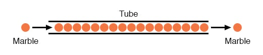
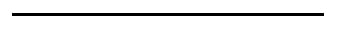
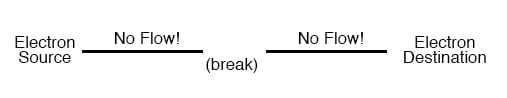
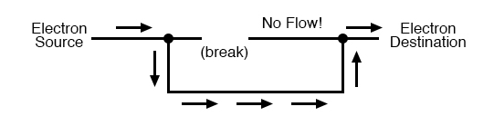

The electrons of different types of atoms have different degrees of freedom to move around. With some types of materials, such as metals, the outermost electrons in the atoms are so loosely bound that they chaotically move in the space between the atoms of that material by nothing more than the influence of room-temperature heat energy. Because these virtually unbound electrons are free to leave their respective atoms and float around in the space between adjacent atoms, they are often called free electrons.
In other types of materials such as glass, the atoms’ electrons have very little freedom to move around. While external forces such as physical rubbing can force some of these electrons to leave their respective atoms and transfer to the atoms of another material, they do not move between atoms within that material very easily.
This relative mobility of electrons within a material is known as electric conductivity. Conductivity is determined by the types of atoms in a material (the number of protons in each atom’s nucleus determines its chemical identity) and how the atoms are linked together with one another. Materials with high electron mobility (many free electrons) are called conductors, while materials with low electron mobility (few or no free electrons) are called insulators. Here are a few common examples of conductors and insulators:
| Conductors | Insulators |
|---|---|
| silver | glass |
| copper | rubber |
| gold | oil |
| aluminum | asphalt |
| iron | fiberglass |
| steel | porcelain |
| brass | ceramic |
| bronze | quartz |
| mercury | (dry) cotton |
| graphite | (dry) paper |
| dirty water | (dry) wood |
| concrete | plastic |
| air | |
| diamond | |
| pure water |
It must be understood that not all conductive materials have the same level of conductivity, and not all insulators are equally resistant to electron motion. Electrical conductivity is analogous to the transparency of certain materials to light: materials that easily “conduct” light are called “transparent,” while those that don’t are called “opaque.” However, not all transparent materials are equally conductive to light. Window glass is better than most plastics, and certainly better than “clear” fiberglass. So it is with electrical conductors, some being better than others.
For instance, silver is the best conductor in the “conductors” list, offering easier passage for electrons than any other material cited. Dirty water and concrete are also listed as conductors, but these materials are substantially less conductive than any metal.
It should also be understood that some materials experience changes in their electrical properties under different conditions. Glass, for instance, is a very good insulator at room temperature but becomes a conductor when heated to a very high temperature. Gases such as air, normally insulating materials, also become conductive if heated to very high temperatures. Most metals become poorer conductors when heated, and better conductors when cooled. Many conductive materials become perfectly conductive (this is called superconductivity) at extremely low temperatures.
While the normal motion of “free” electrons in a conductor is random, with no particular direction or speed, electrons can be influenced to move in a coordinated fashion through a conductive material. This uniform motion of electrons is what we call electricity or electric current. To be more precise, it could be called dynamic electricity in contrast to static electricity, which is an unmoving accumulation of electric charge. Just like water flowing through the emptiness of a pipe, electrons are able to move within the empty space within and between the atoms of a conductor. The conductor may appear to be solid to our eyes, but any material composed of atoms is mostly empty space! The liquid-flow analogy is so fitting that the motion of electrons through a conductor is often referred to as a “flow.”
A noteworthy observation may be made here. As each electron moves uniformly through a conductor, it pushes on the one ahead of it, such that all the electrons move together as a group. The starting and stopping of electron flow through the length of a conductive path is virtually instantaneous from one end of a conductor to the other, even though the motion of each electron may be very slow. An approximate analogy is that of a tube filled end-to-end with marbles:

The tube is full of marbles, just as a conductor is full of free electrons ready to be moved by an outside influence. If a single marble is suddenly inserted into this full tube on the left-hand side, another marble will immediately try to exit the tube on the right. Even though each marble only traveled a short distance, the transfer of motion through the tube is virtually instantaneous from the left end to the right end, no matter how long the tube is. With electricity, the overall effect from one end of a conductor to the other happens at the speed of light: a swift 186,000 miles per second!!! Each individual electron, though, travels through the conductor at a much slower pace.
If we want electrons to flow in a certain direction to a certain place, we must provide the proper path for them to move, just as a plumber must install piping to get water to flow where he or she wants it to flow. To facilitate this, wires are made of highly conductive metals such as copper or aluminum in a wide variety of sizes.
Remember that electrons can flow only when they have the opportunity to move in the space between the atoms of a material. This means that there can be electric current only where there exists a continuous path of conductive material providing a conduit for electrons to travel through. In the marble analogy, marbles can flow into the left-hand side of the tube (and, consequently, through the tube) if and only if the tube is open on the right-hand side for marbles to flow out. If the tube is blocked on the right-hand side, the marbles will just “pile up” inside the tube, and marble “flow” will not occur. The same holds true for electric current: the continuous flow of electrons requires there be an unbroken path to permit that flow. Let’s look at a diagram to illustrate how this works:

A thin, solid line (as shown above) is the conventional symbol for a continuous piece of wire. Since the wire is made of a conductive material, such as copper, its constituent atoms have many free electrons which can easily move through the wire. However, there will never be a continuous or uniform flow of electrons within this wire unless they have a place to come from and a place to go. Let’s add a hypothetical electron “Source” and “Destination:”
Now, with the Electron Source pushing new electrons into the wire on the left-hand side, electron flow through the wire can occur (as indicated by the arrows pointing from left to right). However, the flow will be interrupted if the conductive path formed by the wire is broken:

Since air is an insulating material, and an air gap separates the two pieces of wire, the once-continuous path has now been broken, and electrons cannot flow from Source to Destination. This is like cutting a water pipe in two and capping off the broken ends of the pipe: water can’t flow if there’s no exit out of the pipe. In electrical terms, we had a condition of electrical continuity when the wire was in one piece, and now that continuity is broken with the wire cut and separated.
If we were to take another piece of wire leading to the Destination and simply make physical contact with the wire leading to the Source, we would once again have a continuous path for electrons to flow. The two dots in the diagram indicate physical (metal-to-metal) contact between the wire pieces:

Now, we have continuity from the Source, to the newly-made connection, down, to the right, and up to the Destination. This is analogous to putting a “tee” fitting in one of the capped-off pipes and directing water through a new segment of pipe to its destination. Please take note that the broken segment of wire on the right-hand side has no electrons flowing through it because it is no longer part of a complete path from Source to Destination.
It is interesting to note that no “wear” occurs within wires due to this electric current, unlike water-carrying pipes which are eventually corroded and worn by prolonged flows. Electrons do encounter some degree of friction as they move, however, and this friction can generate heat in a conductor. This is a topic we’ll explore in much greater detail later.
REVIEW: